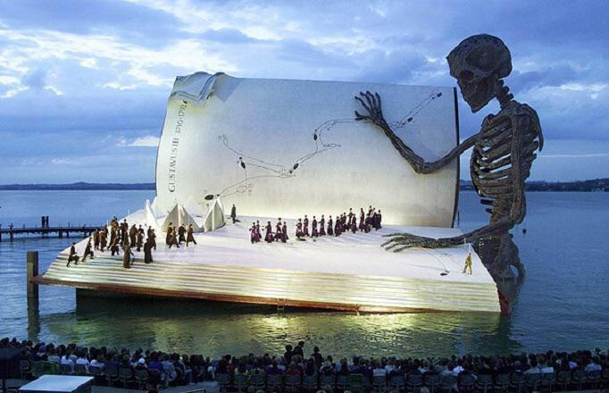

Seenachtfest

The Seenachtfest Konstanz is one of the largest and most popular summer festivals on Lake Constance. Live music, stage programmes, culinary offerings and a spectacular large-scale fireworks display over the lake shape the event, which attracts visitors from across the region and beyond. Over several days, the festival combines atmosphere, entertainment and maritime flair directly along the waterfront of the historic harbour city of Konstanz. Website
Meersburg Wine Festival
Since 1974 wine friends from near and far meet in September to savour Lake Constance wine and Meersburg’s bakery, butchery and fishery specialities on the Castle square. Here you will have the unique opportunity to taste the wine of various vineyards of the Lake Constance region and thus get an overview of local wine growing. Besides Meersburg vineyards, winegrowers from Hagnau, Konstanz and Bermatingen are represented at the wine show on three days, from Friday to Sunday. Delights reaching from the cheese platter to Lake Constance fish are served with the wine. website

40th Kulturufer Friedrichshafen

For the 40th time, the river promenade in Friedrichshafen will be transformed into a colorful festival mile full of music, theatre, cabaret and street art from July 31st to August 9th, 2026. website
Friedrichshafen Oktoberfest
Right on the shore of the picturesque Lake Constance a traditional folk festival in a maritime setting. Centrally located and easily accessible! Whether by bus, train, or catamaran. Several highlights await you at the festival: renowned bands that will heat up the atmosphere in the evenings, local music groups that will provide musical accompaniment to the morning gathering. A carousel, shooting gallery, and freshly roasted almonds are essential at any folk festival. Fun awaits you at the Friedrichshafen Oktoberfest! website

80th Bregenz Festival

To mark the 80th anniversary of the Bregenzer Festspiele, a large-scale open-air exhibition will be on display on the Bregenz lakeside promenade from June to August 2026. Numerous poster walls will showcase the impressive history of the Bregenzer Festspiele, featuring the most important opera productions on the Seebühne from 1946 to the present day. The exhibition invites locals and visitors alike to stroll along the 80-year history of the Bregenzer Seebühne toward the Festspielhaus and immerse themselves in the visual world of the Opera at the Lake—freely accessible and amid the unique setting of Lake Constance. website